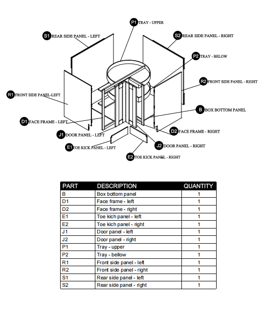

SOURCE / PARTS DIAGRAM
QJ1 + QJ2 / BR · SR · BP
Start with a stable foundation.
The manual begins with the right rear and right side panels. After engaging QJ1 downward, the bottom panel rests on the side support block while QJ2 is aligned and engaged toward the rear panel.
Panel codes and joint order follow the supplied workbook. Use the original documents for the full procedure.
01 / 06